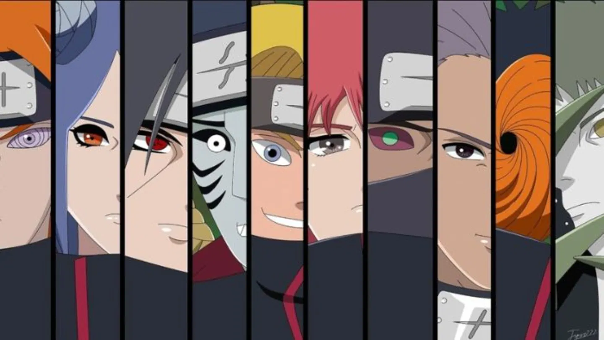
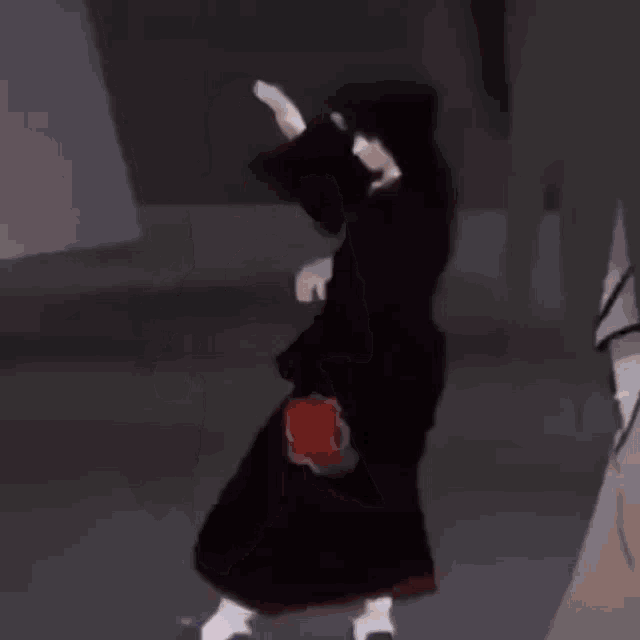

Inicio
Akatsuki es una organización criminal en el mundo de "Naruto" formada por ninjas renegados de distintas aldeas. A lo largo de la historia, su propósito ha evolucionado, pasando de buscar la paz a convertirse en una amenaza mundial.
Akatsuki es una organización criminal en el mundo de "Naruto" formada por ninjas renegados de distintas aldeas. A lo largo de la historia, su propósito ha evolucionado, pasando de buscar la paz a convertirse en una amenaza mundial.
Akatsuki es una de las organizaciones más icónicas en el mundo de Naruto, creada originalmente como un grupo pacifista en la Aldea de la Lluvia (Amegakure), pero que luego se transformó en una poderosa organización criminal con el objetivo de conquistar el mundo shinobi.
La primera versión de Akatsuki fue fundada por Yahiko, Konan y Nagato, tres huérfanos de la Segunda Gran Guerra Ninja, entrenados por Jiraiya. Yahiko quería un mundo sin guerras y reunió seguidores con ideales similares para luchar contra la opresión en Amegakure, gobernada por Hanzo de la Salamandra. Sin embargo, Hanzo vio a Akatsuki como una amenaza y, aliándose con Danzō de Konoha, orquestó una trampa en la que Yahiko se suicidó para proteger a sus amigos.

Tras la muerte de Yahiko, Nagato quedó devastado y despertó completamente el Rinnegan, asesinando brutalmente a Hanzo y sus aliados. Desde entonces, adoptó el nombre de Pain y tomó el control de Amegakure, transformando Akatsuki en una organización criminal con una nueva meta: usar las Bestias con Cola (Bijū) para forzar la paz a través del miedo y la destrucción.
Bajo el liderazgo de Pain, Akatsuki dejó de ser un grupo rebelde local y se convirtió en una organización temida en todo el mundo. Reclutaron poderosos ninjas renegados de distintas aldeas y trabajaron como mercenarios, ejecutando misiones por dinero mientras avanzaban en su plan secreto: capturar a los Jinchūriki (portadores de Bijū)
Nagato, influenciado por Tobi (más tarde revelado como Obito Uchiha), creía que al reunir todas las Bestias con Cola y desatar su poder, podría obligar al mundo a experimentar un dolor tan grande que la guerra se volvería impensable. Sin embargo, Obito tenía su propio plan: usar el poder de los Bijū para activar el Tsukuyomi Infinito, un genjutsu a escala mundial para sumergir a la humanidad en una "paz" falsa.
Finalmente, la organización se desmoronó por completo durante la Cuarta Guerra Mundial Shinobi, cuando Naruto, Sasuke y sus aliados derrotaron a Obito y Madara. El último remanente de Akatsuki, Zetsu Negro, fue destruido junto con Kaguya Ōtsutsuki.
Akatsuki debutó en el "manga en el capítulo 139 (2003)" y en el "anime en el episodio 80 de "Naruto" (2004)". Inicialmente, solo se conocía a Itachi y Kisame, pero con el tiempo se revelaron más miembros y su verdadero propósito.
El uniforme de Akatsuki es icónico y tiene un fuerte simbolismo:


Cada anillo tenía una inscripción especial:

A lo largo de su historia, Akatsuki estuvo compuesta por ninjas renegados de élite de diversas aldeas. Cada miembro tenía un conjunto único de habilidades y motivaciones que los llevaron a unirse a la organización. Aunque sus razones variaban, todos compartían una visión de cambio en el mundo shinobi, aunque con métodos distintos. Muchos de ellos encontraron su fin en batalla, dejando un legado de poder y peligro en el mundo ninja.
Nagato (長門, Nagato), mejor conocido como Pain (ペイン, Pein), era uno de los más poderosos shinobi, y el líder reconocido de Akatsuki y de Amegakure. Todos los miembros de Akatsuki se referían a él como “Líder”, excepto Konan quien lo llamaba por su nombre, Pain. Llevaba el anillo Cero (零, Rei) en el dedo pulgar derecho. También era usuario del dōjutsu legendario, el Rinnegan, que fue dado por Madara Uchiha antes de su muerte e implantado en Nagato cuando solo era un niño. En su estadía en la organización trabajaba con Konan y recibía órdenes de Obito desde las sombras.
Nagato tiene el Dōjutsu del Rinnegan, de donde viene su poder increíble. Este se le fue otorgado por Madara Uchiha, con el fin de que se realizara el Plan Ojo de Luna, con la intervención de Zetsu y Obito que se le presento a el Uzumaki como el verdadero "Madara". Esta técnica fue original del Sabio de los Seis Caminos, el primer ninja del mundo y del que se afirma que es el "Creador del Ninjutsu Moderno". Las habilidades del Rinnegan son desconocidas en su totalidad pero permite al usuario utilizar todos los cinco tipos de chakra elemental, Fuego, Agua, Rayo, Tierra, Viento además del Yang.
Murió tras ser derrotado por Naruto y revivió a las personas de Konoha que habian muerto tras el ataque que el protagonizo en busca del zorro de las 9 colas.

Konan (小南, Konan) era una kunoichi de Amegakure y único miembro femenino de Akatsuki. Llevaba el anillo "Blanco" (白, Bya) en el dedo corazón derecho. Después de la muerte de Nagato, ella desertó de la organización y se convirtió en la líder de Amegakure. Poseía un talento natural para el origami.
Konan ha demostrado tener un talento natural para el origami, incluso lo desarrolló como su ninjutsu principal. Ella ha creado una técnica de transformación única, llamada Danza del Shikigami, que puede convertir todo su cuerpo en un número ilimitado de hojas de papel, que ella puede controlar a voluntad en cualquier forma o color. También lo utiliza para viajar largas distancias, el papel se puede doblar en mariposas o aviones de vuelo, cuando ataca endurece las hojas y los pliegues en flechas, shurikens o hasta espadas. También puede atacar enemigos cubriéndolos con las hojas, lo que limita sus movimientos y los asfixia. Como corresponde (y probablemente, inspiradora) su título como Ángel (天使, Tenshi), forma grandes alas de armamento, a pesar de que es capaz de flotar sin ellas.
Murió al enfrentarse a Obito para proteger el secreto de la ubicación del Rinnegan.

Itachi Uchiha (うちはイタチ, Uchiha Itachi) era el hermano mayor de Sasuke Uchiha. Fue un prodigioso shinobi de Konohagakure infiltrado en la organización ANBU como un doble espía junto a su mejor amigo Shisui Uchiha con el fin de evitar un golpe de estado. Sin embargo, tras el suicidio de Shisui, Itachi aceptó la misión de masacrar al Clan Uchiha convirtiéndose en un desertor y un criminal, y tras esto se unió a Akatsuki donde su compañero asignado fue Kisame Hoshigaki, en el anime su primer compañero fue Jūzō Biwa. Llevaba el anillo "Escarlata" (朱, Shu) en el dedo anular derecho.
Como Itachi nació dentro del Clan Uchiha fue capaz de desarrollar el Kekkei Genkai de su clan, el Sharingan. Sin embargo, a diferencia de los otros miembros, Itachi pudo despertarlo a la temprana edad de 8 años, siendo considerado como uno de los más hábiles de su clan. Al igual que todo portador de este Dojutsu, Itachi podía utilizar sus capacidades, pero en un grado elevado, siendo capaz de atacar a tres ninjas portadores del Sharingan en un segundo.
Itachi poseía el Mangekyō Sharingan, que aumentaba su poder exponencialmente, superando fácilmente a cualquier Sharingan normal, lo cual le permitió usar las técnicas oculares que derivaban del mismo. Con su ojo izquierdo, podía utilizar el Tsukuyomi, un genjutsu que atrapaba la mente de su oponente en un mundo ilusorio, siendo capaz de controlar el espacio, el tiempo e incluso la masa de los objetos. Con esta técnica, Itachi podía atacar el sistema nervioso de su víctima y causar daño físico real, aunque solo fuera una ilusión. Con su ojo derecho, podía usar el Amaterasu, un ninjutsu exclusivo del Mangekyō Sharingan, que creaba unas llamas de color negro que él podía dirigir con la mirada. Estas llamas eran ignífugas, es decir, no se extinguían y podían consumirlo todo incluso el mismo fuego. En palabras de Zetsu Negro: si su ojo izquierdo poseía el genjutsu más poderoso, su ojo derecho poseía el ataque físico más fuerte, refiriéndose al Tsukuyomi y Amaterasu respectivamente.
Murió por una enfermedad terminal tras su pelea con Sasuke.

Kisame Hoshigaki (干柿鬼鮫 Hoshigaki Kisame), conocido como el Monstruo de la Niebla Oculta (霧隠れの怪人, Kirigakure no Kaijin), era un ninja renegado de Kirigakure, ex-miembro de los Siete Espadachines Ninja de la Niebla y, anteriormente, compañero de Itachi Uchiha en Akatsuki. Llevaba el anillo Sur (南, Nan), en el dedo anular izquierdo.
Kisame es un espadachín de gran alcance. La arma de Kisame se llama Samehada, un ser sensible, es una espada, que desgarra la carne en lugar de cortarla. Samehada es también capaz de detectar y absorber chakra, Cuando Samehada absorbe chakra, sus escamas crecen y poco a poco comienza a desenvolverse.
Kisame puede curar y reponer su chakra cuando se fusiona con Samehada, tomando el chakra que la espada tenga acumulado, también puede aumentar aún más su poder y toma la apariencia de un hombre-tiburón, incluso obtiene la habilidad de respirar bajo el agua usando las branquias. Durante el uso de su jutsu Jutsu: Prisión de Agua: Danza de Tiburón, puede aprovechar al máximo esa capacidad ahogando a sus oponentes. En esta forma, puede detectar el chakra de otras personas, y absorber el chakra con solo tocar al enemigo con cualquier parte de su cuerpo. También puede ocultarse dentro de Samehada para pasar desapercibido.
Tras ser capturado toma la decición de suicidarse para evitar ser interrogado por Konoha.

Deidara (デイダラ, Deidara) era un miembro de la organización Akatsuki. Llevaba el anillo "Azul" (青, Ao), en el dedo índice derecho. Su compañero era Obito Uchiha, aunque, antiguamente, fue Sasori.
Deidara fue un muy poderoso Ninja Renegado de rango S, cuyas capacidades le valieron el reconocimiento dentro de Akatsuki. Kisame Hoshigaki mencionó que era muy fuerte e incluso fue elogiado por el líder, Pain, que admitió abiertamente que era alguien único y que su pérdida fue un duro golpe para el grupo. Actuando por su cuenta, Deidara fue capaz de luchar y derrotar a Gaara, el anfitrión de Shukaku y Quinto Kazekage, uno a uno.
Deidara tenía un Kekkei Genkai conocido como Elemento Explosión; le permitía utilizar simultáneamente el Elemento Tierra con otro elemento desconocido para dar a sus cualidades explosivas de chakra. Deidara poseía bocas especiales en la palma de cada mano para crear Arcilla Explosiva, las detonaba con el comando Katsu (喝) y un sello con una sola mano con cualquier sello tigre o carnero. Esta arcilla puede ser moldeada en una gran variedad de formas, y podía ser controlada a voluntad. Esto le permitió atacar a los oponentes a larga distancia.
Deidara podía crear clones a partir de la arcilla y clones suicidas con bombas, que podría ser una sorpresa mortal para los opositores. Las creaciones de arcilla de Deidara iban desde microscópicas a tamaño gigantesco, lo que le permite adaptarse a cualquier situación.
Se suicidó en su pelea contra Sasuke usando su técnica de *auto-destrucción definitiva*.

Sasori (サソリ, Sasori), también conocido como Sasori de la Arena Roja (赤砂のサソリ, Akasuna no Sasori), era el nieto de Chiyo y miembro de Akatsuki. Llevaba el anillo "Joya" (玉, Gyoku) en el pulgar izquierdo. Tenía como compañero a Deidara y antes a Orochimaru (hasta que este desertó).
Sasori tiene marionetas únicas en que se hicieron desde el cuerpo, aún vivo, de los seres humanos. Estas Marionetas Humanas eran más versátiles que los títeres regulares, ya que, además de tener muchos dispositivos peligrosos instalados dentro de ellas (como sucede con los títeres ordinarios), también eran capaces de usar chakra y realizar jutsu. Cualquier jutsu o Kekkei Genkai poseído por el ser humano también puede usarlo cuando la convierte en marioneta.
Una de sus marionetas mas fuertes se trataba del Tercer Kazekage, asesinado por Sasori. Éste utilizó su habilidad especial para convertir el cuerpo humano en una marioneta, y así poder controlarlo y utilizar sus técnicas únicas. La marioneta consta de un gran arsenal de armas ocultas, así como una enorme garra en uno de sus brazos, una sierra circular y sus brazos extensibles en otro, los cuales contienen en su interior tubos expulsadores de veneno gaseoso letal.
También tiene la capacidad de que de unos sellos colocados en sus brazos salgan innumerables manos hacia el contrincante. La marioneta también tiene las técnicas de su anterior cuerpo, el Kekkei Genkai Elemento Imán, destacando la poderosa Arena de Hierro, la cual es capaz de moldear en cualquier forma que fuera la ideal para el momento de la batalla, así como la propiedad magnética que ésta poseía, que no permitía el uso de armas metálicas y como todas sus técnicas, poseía su veneno especial. Destacando su habilidad de Arena de Hierro: Orden Mundial, donde la arena de hierro se extiende en forma de espigas infinitamente hasta destrozar el objetivo, se extiende en todas las direcciones y da la ilusión de que es un bosque de árboles muertos.
Murió luchando contra Sakura y Chiyo.

Hidan (飛段, Hidan) era un miembro de la Organización Akatsuki. Su compañero era Kakuzu, a pesar de tener aversión mutua el uno al otro. Llevaba el anillo "Tres" (三, San) en el dedo índice izquierdo. Era el miembro más nuevo de Akatsuki, Kisame se refería peyorativamente a Hidan y Kakuzu como el "Combo Zombie" (ゾンビコンビ, Zonbi Konbi) debido al hecho de que en cierto sentido, no podían morir.
La capacidad primaria de Hidan era su incapacidad de morir, por el resultado de haber experimentado con diversos jutsu de la religión Jashin. Su inmortalidad le permitió sobrevivir a numerosos accidentes mortales, y casi cualquier forma de desmembramiento; incluso conservó su capacidad de hablar después de que le cortaran la cabeza. Sin embargo; la cabeza tenía que estar conectada a su cuerpo, pero gracias a Kakuzu podía unir sus partes cortadas, cuando sea necesario. A pesar del intento de Shikamaru lanzando un gran número de papeles bomba a su cuerpo entero, solo tuvo éxito en decapitarlo (después Kakuzu conecta su cabeza). A pesar de que era inmune a la mayoría de ataques físicos, podía sentir el dolor, que llegó a encontrar placer en a costa de sus oponentes. Su incapacidad de morir fue la razón primordial de su asociación con Kakuzu.
En batalla, Hidan usaba una gran Guadaña roja con tres hojas, su guadaña es un arma de corto y largo alcance. A pesar de su gran forma, Shikamaru especuló que tenía la intención de extraer la sangre, en vez de hacer daño. Hidan la controla con un cable largo, que estaba conectado a una bobina oculta bajo su túnica. Hidan era excepcionalmente hábil con su guadaña, era capaz de desviar un gran número de shuriken lanzados a corta distancia.
Fue derrotado y enterrado vivo por Shikamaru.

Kakuzu (角都, Kakuzu) fue un ninja renegado de Takigakure y miembro de Akatsuki. Su compañero fue Hidan. Llevaba el anillo "Norte" (北, Hoku) en el dedo medio izquierdo. A pesar de la mutua antipatía entre ambos, su trabajo en equipo fue casi perfecto, porque se complementaban mutuamente. Kisame Hoshigaki se refería peyorativamente a Hidan y Kakuzu como el "Combo Zombie" (ゾンビコンビ, Zonbi Konbi), ya que prácticamente no podían morir.
Todas las habilidades de Kakuzu giran en torno a su estructura de su cuerpo, compuesto de cientos de hilos, color gris oscuro, hilos entretejidos en su carne llamado Jiongu, mantienen su cuerpo en conjunto con puntadas. Esto le permitió separar sus partes del cuerpo a voluntad para llevar a cabo ataques físicos a largo alcance, haciéndole muy difícil de derrotar. Los hilos también podrían utilizarse para reparar el cuerpo de los demás, como cuando vuelve a unir los brazos de Deidara, aunque la incapacidad de Hidan a morir después de haber sido desmembrado, le llevó a ser el paciente más frecuente de Kakuzu. Debido a su estructura de órgano único, Kakuzu es un hombre muy duradero, capaz de recibir un ataque directo del Chidori de Kakashi sin que obstaculice su desempeño. Sus hilos podrían formar una forma de pulpo gigante alrededor de su cuerpo.
Los hilos de Kakuzu le otorgan el título de la inmortalidad (aunque él se negó a pensar de esa manera). Los hilos podrían perforar la carne y el cuerpo de los demás, lo que le permite extraer sus órganos e integrarlos en su propio cuerpo, extendiendo así su esperanza de vida. Él, comúnmente, extirpa el corazón de sus oponentes; esta forma, mantiene un total de cinco corazones en cualquier momento, por lo tanto, se le tiene que matar cinco veces en una batalla antes de que él realmente muera.
Murió a manos de Naruto con el Rasenshuriken.

Zetsu blanco (白ゼツ, Shiro-Zetsu) era uno de los primeros humanos afectados por el Tsukuyomi infinito que se encontraban dentro de la Estatua Demoníaca del Camino Exterior, hasta que, cuando, finalmente, Madara Uchiha logró invocarla, fue sacado de la estatua por el Zetsu Negro e influenciado por el ADN de Hashirama Senju. Posee una mitad conocida como Zetsu Negro, el cual era la voluntad de Madara, pero, en realidad, era el tercer hijo de Kaguya Ōtsutsuki. Tras ayudar a Obito Uchiha en su reunión con Nagato, Zetsu se convirtió en uno de los miembros más importantes de Akatsuki, sirviendo como mano derecha del creador de la organización. Zetsu porta el anillo con el kanji 亥 (gai, literalmente, jabalí), en el dedo meñique derecho. Zetsu blanco es conocido también como Jōzetsu (饒舌, literalmente, significa Parlanchín).
Zetsu Negro (黒ゼツ, Kuro-Zetsu) es la manifestación de la voluntad de Kaguya Ōtsutsuki, aunque este fingió ser la voluntad de Madara Uchiha. Fue la mente maestra tras varios acontecimientos importantes que dieron lugar y formaron la historia de los Shinobis. Tras ayudar a Obito Uchiha en su reunión con Nagato, Zetsu se convirtió en uno de los miembros más importantes de Akatsuki, sirviendo como mano derecha del creador de la organización. Zetsu porta el anillo con el kanji 亥(Gai, literalmente "jabalí"), en el dedo meñique derecho. Zetsu Negro es conocido también como Dokuzetsu (毒舌, literalmente, significa Lengua Perversa). Además, fue el segundo Jinchūriki de la mitad Yin de Kurama al robarla.
Obito se refiere a Zetsu como a un usuario no-especializado en el combate y sólo se ha mostrado utilizando habilidades de apoyo. Además de funcionar como un solo individuo mediante la comunicación utilizando sus pensamientos, Zetsu también ha demostrado la capacidad de dividirse en dos, de modo que sus dos mitades pueden actuar de forma independiente. Bien estando separados, las dos mitades de Zetsu podían comunicarse entre sí, sin importar la distancia, a través de las raíces que hay en la tierra. Al haber sido convertido en un humano artificial, Zetsu blanco era capaz de sobrevivir sin comida, agua, ni tampoco llevar a cabo las funciones de un cuerpo humano normal.
Fue sellado por Sasuke en la Cuarta Guerra Ninja.

Obito Uchiha (うちはオビト, Uchiha Obito) era compañero de Kakashi Hatake y Rin Nohara, alumno de Minato Namikaze y fue quien le dio a Kakashi su Sharingan izquierdo. Después de su supuesta muerte en la Tercera Guerra Mundial Shinobi, reapareció como Tobi (トビ, Tobi). Él era el verdadero líder de Akatsuki tras la muerte del líder original, Yahiko. Era uno de los antagonistas principales de la serie, hasta su derrota a manos de la Alianza Shinobi y su redención a manos de Naruto Uzumaki. Él mismo se había auto-proclamado como Madara Uchiha para provocar temor en sus contrarios. Además de esto, fue el segundo Jinchūriki del Diez Colas.
Aunque nació en el Clan Uchiha y se convirtió en un Chūnin a la edad de once años, la destreza general de Obito como shinobi era normal y él estaba constantemente detrás de sus compañeros de clase, como Kakashi y Guy. A pesar de este desarrollo relativamente lento como un shinobi en sus años de juventud, el talento de Obito comenzó a surgir después de despertar su Sharingan. Se las arregló para adaptar y utilizar con rapidez las técnicas avanzadas poco después de su obtención, casi igual a su futura contraparte dual, pero al obtener el poder del Mangekyō Sharingan y Elemento Madera a corta edad, demostró ser una flor tardía, pero trascendentalmente mortal. Tobi, al luchar junto a él, señaló que el potencial de Obito era tan grande, que en ello entendió por qué Madara Uchiha lo había elegido como su aprendiz. Con estos nuevos poderes, Obito fue capaz de masacrar a un gran grupo de Jōnin y ANBU de Kirigakure con facilidad y sin recibir un solo rasguño.
Obito poseía su propia versión del Kamui, muy diferente al de su amigo, Kakashi, en donde el Uchiha tenía la capacidad de hacerse "intangible" y de teletransportarse. Con el Kamui, Obito era casi impermeable a los daños. Al ser golpeado, los ataques pasaban a través de él, aunque a veces fingía estar herido o lloraba de dolor. De acuerdo con Kakashi, usaba la técnica para enviarse a sí mismo o incluso partes de su cuerpo a la Dimensión del Kamui y devolverlos al instante, haciendo parecer que es "intangible", lo cual fue comprobado durante la batalla de Obito contra Naruto, B, Guy y Kakashi durante la Cuarta Guerra Mundial Shinobi. Lamentablemente, Konan había descubierto que tenía un límite de tiempo de cinco minutos, además, si alguien se encontraba en la dimensión, podía golpear las partes del cuerpo de Obito que son teletransportadas al lugar.
Murió protegiendo a Naruto y Sasuke de Kaguya Ōtsutsuki.

Te falta cumbia Sasuke
